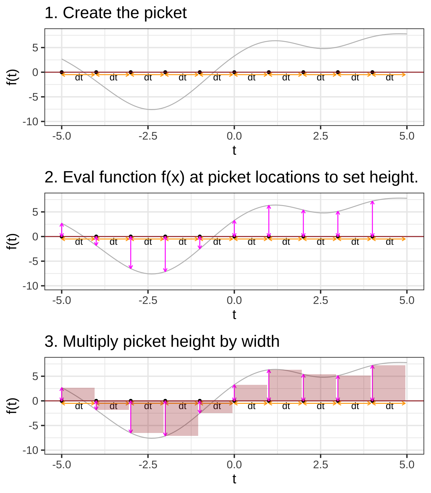
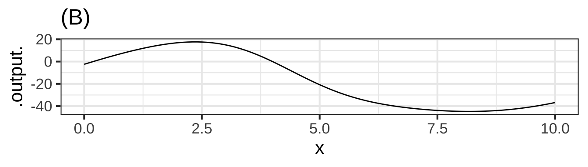
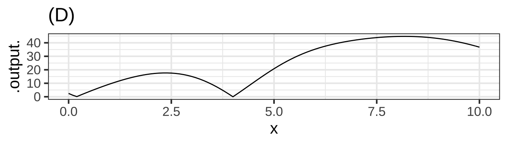

Chapter 30 Integrals step-by-step
The setting for anti-differentiation (and it’s close cousin, integration) is that we have a function \(F(t)\) which we do not yet know, but we do have access to some information about it: its slope as a function of time \(f(t) \equiv \partial_t F(t)\) and, perhaps, its value \(F(t_0)\) at some definite input value.
Chapter 28 showed some ways to visualize the construction of an \(F(t)\) by accumulating short segments of slope. The idea is that we know \(f(t)\) which tells us, at any instant, the slope of \(F(t)\). So, in drawing a graph of \(F(t)\), we put our pen to paper at some input value \(t_0\) and then move forward in \(t\), setting the instantaneous slope of our curve according to \(f(t)\).
In Chapter 29, we dealt with one of the limitations of finding \(F(t)\) by anti-differentiation of \(f(t)\); the anti-derivative is not unique. This is because to start drawing \(F(t)\) we need pick a \(t_0\) and an initial value of \(F(t_0)\). If we had picked a a different starting point \(t_1\) or a different initial value \(F(t_1)\), the new curve would be different than the one drawn through \((t_0, F(t_0))\), although it would have the same shape, just shifted up or down according to our choice. We summarize this situation algebraically by writing \[\int f(t) dt = F(t) + C\ ,\] where \(C\) is the constant of integration, that is, the vertical shift of the curve.
The non-uniqueness of \(F(t)\) does not invalidate its usefulness. In particular, the quantity \(F(b) - F(a)\), will be the same regardless of which starting point we used to draw \(F(t)\). We have two names for \(F(b) - F(a)\)
- The net change in \(F()\) from \(a\) to \(b\).
- The definite integral of \(f()\) from \(a\) to \(b\), written \(\int_a^b f(t) dt\).
These two things, the net change and the definite integral, are really one and the same, a fact we describe by writing \[\int_a^b f(t) dt = F(b) - F(a)\ .\]
In this chapter, we’ll introduce a simple numerical method for calculating from \(f()\) the net change/definite integral. This will be a matter of trivial but tedious arithmetic: adding up lots of little bits of \(f(t)\). Later, in Chapter 31, we’ll see how to avoid the tedious arithmetic by use of algebraic, symbolic transformations. This symbolic approach has great advantages, and is the dominant method of anti-differentiation found in college-level science textbooks. However, there are many common \(f(t)\) for which the symbolic approach is not possible, whereas the numerical method works for any \(f(t)\). Even more important, the numerical technique has a simple natural extension to some commonly encountered accumulation problems that look superficially like they can be solved by anti-differentiation but rarely can be in practice. We’ll meet one such problem and solve it numerically, but a broad approach to the topic, called dynamics or differential equations, will have to wait until Block 6.
30.1 Euler method
The starting point for this method is the definition of the derivative of \(F(t)\). Reaching back to Chapter 8,
\[\partial_t F(t) \equiv \lim_{h\rightarrow 0} \frac{F(t+h) - F(t)}{h}\] To translate this into a numerical method for computing \(F(t)\), let’s write things a little differently.
- First, since the problem setting is that we don’t (yet) know \(F(t)\), let’s refer to things we do know. In particular, we know \(f(t) = \partial_t F(t)\).
- Again, recognizing that we don’t yet know \(F(t)\), let’s re-write the expression using something that we do know: \(F(t_0)\). Stated more precisely, \(F(t_0)\) is something we get to make up to suit our convenience. (A common choice is \(F(t_0)=0\).)
- Let’s replace the symbol \(h\) with the symbol \(dt\). Both of them mean “a little bit of” and \(dt\) makes explicit that we mean “a little bit of \(t\).”
- We’ll substitute the limit \(\lim_{h\rightarrow 0}\) with an understanding that \(dt\) will be something “small.” How small? We’ll deal with that question when we have to tools to answer it.
With these changes, we have \[f(t_0) = \frac{F(t_0+dt) - F(t_0)}{dt}\ .\] The one quantity in this relationship that we do not yet know is \(F(t_0 + dt)\). So re-arrange the equation so that we can calculate the unknown in terms of the known. \[F(t_0 + dt) = F(t_0) + f(t_0)\, dt\ .\]
Example 30.1 Let’s consider finding the anti-derivative of \(\dnorm()\), that is, \(\int_0^t \dnorm(x) dx\). In one sense, you already know the answer, since \(\partial_x \pnorm(x) = \dnorm(x)\). In reality, however, we know \(\pnorm()\) only because it has been numerically constructed by integrating \(\dnorm()\). The \(\pnorm()\) function is so important that the numerically constructed answer has been memorized by software.
30.2 Area
The quantity \[\Large \color{magenta}{f(t_0)}\, \color{orange}{dt}\] gives rise to a visualization that has been learned by generations of calculus students. The visualization is so compelling and powerful that many students (and teachers, and textbook authors) mistake the visualization for integration and anti-differentiation themselves.
We’ll start the visualization with a simple graph of \(f(t)\), which is called the integrand in the integral \(\int_a^b f(t) dt\). Figure 30.1 shows the graph of \(f(t)\). A specific point \(t_0\) has been marked on the horizontal axis. Next to it is another mark at \(t_0 + dt\). Of course, the distance between these marks is \(\color{orange}{dt}\).
## Warning in is.na(x): is.na() applied to non-(list or vector) of type
## 'expression'Figure 30.1: Illustrating the interpretation of \(f(t_0) dt\) as an “area.”
Per the usual graphical convention, a position along the vertical axis corresponds to a possible output of \(f(t)\). The output for \(t=t_0\) is \(\color{magenta}{f(t_0)}\). That same quantity corresponds to the length of the vertical orange segment connecting \((t_0, 0)\) to \((t_0, f(t_0))\).
The \(\color{orange}{dt}\) line segment and the \(\color{magenta}{f(t_0)}\) segment constitute two sides of a rectangle, shown as a shaded zone. The “area” of that rectangle is the product \(\color{magenta}{f(t_0)}\ \color{orange}{dt}\).
In this sort of visualization, an integral is the accumulation of many of these \(f(t) dt\) rectangles. For instance, Figure 30.2 the visualization of the integral \[\int_{0}^3 f(t) dt\ .\]
## Warning in is.na(x): is.na() applied to non-(list or vector) of type
## 'expression'
## Warning in is.na(x): is.na() applied to non-(list or vector) of type
## 'expression'
## Warning in is.na(x): is.na() applied to non-(list or vector) of type
## 'expression'Figure 30.2: Visualizing the integral \(\int_0^3 f(t) dt\) as the total “area” of several \(f(t) dt\) bars. The width of each of the bars is \(dt\). The height depends on the value of the function \(f(t)\) at the bar. For illustration, two of the bars are marked with vertical and horizontal line segments.
As always in calculus, we imagine \(dt\) as a “small” quantity. In Figure 30.3 you can see that the function output changes substantially over the sub-domain spanned by a single rectangle. Using smaller and smaller \(dt\), as in Figure ?? brings the visualization closer and closer to the actual meaning of an anti-derivative.
Figure 30.3: Visualizing the integral \(\int_0^3 f(t) dt\) as the total “area” of several \(f(t) dt\) bars. The width of each of the bars is \(dt\). The height depends on the value of the function \(f(t)\) at the bar. For illustration, two of the bars are marked with vertical and horizontal line segments.
Why do you keep putting “area” in quotes?
When \(f(t_i) < 0\), then \(f(t_i) dt\) will be negative. There is no such thing as a negative area, but in constructing an integral the \(f(t_i)dt\), being negative, diminishes the accumulated area.
## Warning in is.na(x): is.na() applied to non-(list or vector) of type
## 'expression'Figure 30.4: The \(\int_{-2}^3 g(t) dt\) covers subdomains where \(g(t) > 0\) and where \(g(t) < 0\). In those latter subdomains, the “area” is negative, and shown in light orange here.
Another problem is that area is a physical quantity, with dimension L\(^2\). The quantity produced by integration will have physical dimension \([f(t)][t]\), the product of the dimension of the with-respect-to quantity and the output of the function.
“Area” is an effective metaphor for visualizing integration, but the goal of integration is not to calculate an area but, typically, some other kind of quantity.
30.3 The Euler Step
The previous section a visualization of an integral in terms of an area on a graph. As you know, a definite integral \(\int_a^b f(t) dt\) can also be computed by constructing the anti-derivative \(F(t) \equiv \int f(t) dt\) and evaluating it at the upper and lower bounds of integration: \(F(b) - F(a)\). In this section, we’ll look at the numerical process of constructing an anti-derivative function, which uses many of the same concepts as those involved in finding an integral by combining areas of rectangles.
A definite integral produces a quantity, not a function. The anti-derivative function constructed by using quantities like \(f(t) dt\) will be a series of quantities rather than a formula. In particular, it will have the form of a data table, something like this:
| \(t\) | \(F(t)\) |
|---|---|
| -2 | 10.62 |
| -1.5 | 6.47 |
| -1 | 3.51 |
| -0.5 | 2.02 |
| 0 | 2.4 |
| 0.5 | 3.18 |
| 1.0 | 5.14 |
| \(\vdots\) | \(\vdots\) |
To start, we’ll need to create a series of \(t\) values. We’ll do this by specifying a starting value for \(t\) and then creating successive values by adding a numerical increment \(dt\) to the entries one after the other until we reach a terminating value. For instance, in the above table, the starting value for \(t\) is \(-2\), the numerical increment is \(dt=0.5\), and the terminating value is \(1\).
In previous chapters of this book we have worked with data tables, but always the data table was given to us, we did not have to construct it.50 Now we need to construct the data frame with the \(t\) column containing appropriate values. Computer languages provide many ways to accomplish this task. We’ll use a simple R/mosaic function Picket(), which constructs a data table like the one shown above. You provide two arguments: the domain for \(t\), that is, the desired upper and lower bounds of integration; the interval size \(dt\) (which is called h in the argument list). For instance, to construct the \(t\) column of the table shown above, you can use Picket() this way:
Pts <- Picket(domain(t = -2:1), h=0.5)
Pts## # A tibble: 6 × 3
## t preweight weight
## <dbl> <dbl> <dbl>
## 1 -2 1 0.5
## 2 -1.5 1 0.5
## 3 -1 1 0.5
## 4 -0.5 1 0.5
## 5 0 1 0.5
## 6 0.5 1 0.5As you can see, the data table produced by Picket() has the \(t\) column, as well as a second column named weight. We haven’t explained weight yet, but you can see that it is the same value we specified as h.
The name Picket() is motivated by the shape of a picket fence. The pickets are evenly spaced, which keeps things simple but is not a requirement.
Note that the picket does not say anything at all about the function \(f(t)\) being anti-differentiated. The picket can be applied to any function although precision might require a smaller \(dt\) for functions that have a lot going on in a small domain.
The next step in using the picket to perform anti-differentiation is to apply the function \(f()\) to the pickets. That is, we’ll add a new column, perhaps called vals to the data table.
Adding a new column is a common task when dealing with data. We’ll do this with a new function, mutate(), whose specific function is adding new columns (or modifying old ones). Here’s the command to apply \(f()\) to t and call the new column vals:
# Find the height of the pickets
Pts <- Pts %>%
mutate(vals = f(t))With this modification, the data table looks like:
## # A tibble: 6 × 4
## t preweight weight vals
## <dbl> <dbl> <dbl> <dbl>
## 1 -2 1 0.5 -9.12
## 2 -1.5 1 0.5 -7.27
## 3 -1 1 0.5 -4.50
## 4 -0.5 1 0.5 -1.46
## 5 0 1 0.5 1.28
## 6 0.5 1 0.5 3.31Now that we know the value of the function at each of the pickets, the next step is to multiply the value by the spacing between pickets. That spacing, which we set with the argument h = 0.5 in our original call to Picket() is in the column called weight. We’ll call the result of the multiplication step. Note that the following R command incorporates the previous calculation of vals; we’re looking to build up a single command that will do all the work.
# Multiply the height by the picket spacing
Pts <- Pts %>%
mutate(vals = f(t),
step = vals * weight)Pts## # A tibble: 6 × 5
## t preweight weight vals step
## <dbl> <dbl> <dbl> <dbl> <dbl>
## 1 -2 1 0.5 -9.12 -4.56
## 2 -1.5 1 0.5 -7.27 -3.63
## 3 -1 1 0.5 -4.50 -2.25
## 4 -0.5 1 0.5 -1.46 -0.732
## 5 0 1 0.5 1.28 0.639
## 6 0.5 1 0.5 3.31 1.66We used the name step to identify the product of the height and spacing of the pickets to help you think about the overall calculation as accumulating a series of steps. Each step provides a little more information about the anti-derivative that we will now calculate. In terms of the area metaphor for integration, each step is the area of one vertical bar of the sort presented in the previous section.
We’ll call these Euler steps, a term that will be especially appropriate when, in Block 6, we use integration to calculate the trajectories of systems—such as a ball in flight—that change in time.
The final step in constructing the anti-derivative is to add up the steps. This is simple addition. But we’ll arrange the addition one step at a time. That is, for the second row, the result will be the sum of the first two steps. For the third row, the result will be the sum of the first three steps. And so on. The name for this sort of accumulation of the previous steps is called a cumulative sum. Another name for a cumulative sum is a “running sum”: the sum-so-far as we move down the column of steps. Cumulative sums are computed in R by using cumsum(). Here, we’re calling the result of the cumulative sum F to emphasize that it is the result of anti-differentiating \(f()\). But keep in mind that the anti-derivative is not just the F column, but the table with both t and F columns. That is, the table has a column for the input as well as the output. That’s what it takes to be a function.
# Doing everything in one command
Pts <-
Picket(domain(t = -2:1), h=0.5) %>%
mutate(vals = f(t),
step = vals * weight,
F = cumsum(step))## # A tibble: 6 × 6
## t preweight weight vals step F
## <dbl> <dbl> <dbl> <dbl> <dbl> <dbl>
## 1 -2 1 0.5 -9.12 -4.56 -4.56
## 2 -1.5 1 0.5 -7.27 -3.63 -8.19
## 3 -1 1 0.5 -4.50 -2.25 -10.4
## 4 -0.5 1 0.5 -1.46 -0.732 -11.2
## 5 0 1 0.5 1.28 0.639 -10.5
## 6 0.5 1 0.5 3.31 1.66 -8.88We can summarize the steps in this Euler approach to numerical integration graphically:
## Scale for 'y' is already present. Adding another scale for 'y', which will
## replace the existing scale.
![Steps in a numerical construction of an anti-derivative. (1) Create a set of picket locations over the domain of interest. The locations are spread horizontally by amount dt, so each picket will be dt units wide. (2) evaluate the original function at the picket points to give picket heights. (3) Multiply the picket height by the picket width to create an "area". (4) Starting at zero for the left-most picket, add in successive picket areas to construct the points on the anti-derivative function (green). Note that the vertical axis in (4) has a different dimension and units than in steps (1)-(3). In (4) the vertical scale is in the units of the anti-derivative function output.](CalcZ-notes_files/figure-html/euler-integration2-1.png)
Figure 30.5: Steps in a numerical construction of an anti-derivative. (1) Create a set of picket locations over the domain of interest. The locations are spread horizontally by amount dt, so each picket will be dt units wide. (2) evaluate the original function at the picket points to give picket heights. (3) Multiply the picket height by the picket width to create an “area.” (4) Starting at zero for the left-most picket, add in successive picket areas to construct the points on the anti-derivative function (green). Note that the vertical axis in (4) has a different dimension and units than in steps (1)-(3). In (4) the vertical scale is in the units of the anti-derivative function output.
30.4 Better numerics (optional)
Except as a textbook exercise, you will likely never have to compute a numerical anti-derivative from scratch as we did in the previous section. This is a good thing. To understand why, you have to know one of the important features of modern technical work. That feature is: We never work alone in technical matters. There is always a set of people whose previous work we are building on, even if we never know the names of those people. This is because technology is complicated and it is evidently beyond the reach of any human to master all the salient aspects of each piece of technology being incorporated into the work we consider our own.
Of course this is true for computers, since no individual can build a useful computer from first principles. It’s also true for software. One detail in particular is relevant to us here. Computer arithmetic of the sort used in the previous section—particularly addition—is prone to error when adding up lots and lots of small bits. This means that it is not always sensible to choose very small \(dt\) in order to get a very accurate approximation to the anti-derivative.
Fortunately, there are specialists in numerical mathematics who work on ways to improve the accuracy of calculations for mid-sized \(dt\). Their work has been incorporated into the results of antiD() and Integrate() and so the details are, for us, unimportant. But they are only unimportant because they have been taken care of.
To illustrate how considerably more accuracy can be gained in calculating an anti-derivative, consider that the rectangular bars drawn in the previous sections are intended to approximate the “area” under the function. With this in mind, we can replace the rectangular bars with more suitable shapes that stay closer to the function over the finite extend of each \(dt\) domain. The rectangular bars model the function as piecewise constant. A better job can be done with piecewise linear approximations or piecewise quadratic approximations. Often, such refinements can be implemented merely by changing the weight column in the picket data frame used to start off the process.
One widely used method, called Gauss-Legendre quadrature can calculate a large segment of an integral accurately (under conditions that are common in practice) with just five evaluations of the integrand \(f(t)\). For the integral \(\int_a^b f(t) dt\) the picket locations and weights have these values:
| location | weight |
|---|---|
| \(c - 0.90618 w\) | \(0.236927 \times w\) |
| \(c - 0.53847 w\) | \(0.478629 \times w\) |
| \(c\) | \(0.568889 \times w\) |
| \(c + 0.53847 w\) | \(0.478629 \times w\) |
| \(c + 0.90618 w\) | \(0.236927 \times w\) |
where \(c = \frac{a+b}{2}\) and \(w = (b-a)/2\).
The locations and weights may seem like a wizard parody of mathematics, but those precise values are founded in an advanced formulation of polynomials rooted in the theory of linear combinations to which you’ll be introduced in Block 5. Needless to say, you can hardly be expected to have any idea where they come from. That’s why it’s useful to build on the work of experts in specialized areas. It’s particularly helpful when such expertise is incorporated into software that faithfully and reliably implements the methods. The lesson to take to heart: Use professional software systems that have been extensively vetted.
30.5 Exercises
Exercise 30.02:  ady5Fh
ady5Fh
The output of a function, being a quantity, has dimension and units. Suppose the dimension of the output of a function \(v(t)\) is \(L/T\), for instance, meters-per-second.
The anti-derivative function \(V(t) \equiv \int v(t) dt\) will also have dimension and units.
Recall that in constructing the anti-derivative using the Euler method, we multiply the values of \(v(t)\) times some small increment in the input, \(h\). Therefore the dimension of the output of \(V(t)\) will be \([v(t)] [t]\). So if \([v(t)] = L/T\), the dimension \([V(t)] [t] = L T/T = L\). Units for such a dimension would be, for instance, meters. This makes sense, since if you accumulate velocity (meters-per-sec) over an interval of time (sec) you end up with the distance travelled (meters).
Suppose you know the acceleration \(a(t)\) of an object as a function of time. The dimension of acceleration is \(L/T^2\).
askMC(
"What is the dimension of $$\\int a(t) dt\\ \\text{?}$$",
"$L/T^3$", "$L$", "$LT$", "+$L/T$+", "$LT^2$"
)Question A What is the dimension of \[\int a(t) dt\ \text{?}\]
\(L/T^3\)︎✘ \(L\)︎✘ \(LT\)︎✘ \(L/T\)\(\heartsuit\ \) \(LT^2\)︎✘
Suppose you know the power consumed by an appliance \(p(t)\) as a function of time. Typically appliances have a cycle and use different amounts of power during different parts of the cycle. (Think of a clothes washer.)
askMC(
"What will be the dimension of $\\int p(t) dt\\ \\text{?}$",
"+energy+", "force", "acceleration", "length"
)Question B What will be the dimension of \(\int p(t) dt\ \text{?}\)
energy\(\heartsuit\ \) force︎✘ acceleration︎✘ length︎✘
Exercise 30.04: CCwWGB
In this activity, you are going to use the “Graph-antiD” web app which enables you to visualize the anti-derivative function in terms of areas. To use the app, click-drag-and-release to mark part of the domain of the function being displayed.
Add a picture of the app and a link to it.
To answer these questions correctly, you must set the “Shape of function” box to 864.
askMC(
"A. From the graph, roughly estimate $$\\int_0^3 f(t)dt$$ Choose the closest numerical value from the following. You could use either graph for this caclulation, but $F(t)$ will be simpler algebra.",
-46, -26, "0"="F(t) has a net change over the interval", "3"="there is more stock at F(3) than F(0)", "19"="there is more stock at F(3) than F(0)", "26"="F(t) at the right end of the interval is lower than at the left end", right_one = -26,
random_answer_order = FALSE
)Question A A. From the graph, roughly estimate \[\int_0^3 f(t)dt\] Choose the closest numerical value from the following. You could use either graph for this caclulation, but \(F(t)\) will be simpler algebra.
- -46︎✘
- -26Right!
- 0︎✘ F(t) has a net change over the interval
- 3︎✘ there is more stock at F(3) than F(0)
- 19︎✘ there is more stock at F(3) than F(0)
- 26︎✘ F(t) at the right end of the interval is lower than at the left end
askMC(
"B. In order to construct the anti-derivative whose value at time $t=-3$ will be zero, what constant of integration $C$ should you **add** to the $F(t)$ shown.",
"-120"= "Would adding this to F(-3) be equal to 0?", "-80"= "Would adding this to F(-3) be equal to 0?", "-50"= "Would adding this to F(-3) be equal to 0?", "0"= "Would adding this to F(-3) be equal to 0?", "50" = "Would adding this to F(-3) be equal to 0?",
"80" = "Are you sure you have the sign right?",
"120" = "Would adding this to F(-3) be equal to 0?",
right_one = -80,
random_answer_order = FALSE
)Question B B. In order to construct the anti-derivative whose value at time \(t=-3\) will be zero, what constant of integration \(C\) should you add to the \(F(t)\) shown.
- -120︎✘ Would adding this to F(-3) be equal to 0?
- -80Correct. Would adding this to F(-3) be equal to 0?
- -50︎✘ Would adding this to F(-3) be equal to 0?
- 0︎✘ Would adding this to F(-3) be equal to 0?
- 50︎✘ Would adding this to F(-3) be equal to 0?
- 80︎✘ Are you sure you have the sign right?
- 120︎✘ Would adding this to F(-3) be equal to 0?
askMC(
"C. Examining the stock at time $t=0$, you observe that there are 40 units. Roughly how much stock will there be at $t=5$?",
"-25" = "Did you shift the curve in the right direction?", "-15" = "That would be the answer if there had been 0 units of stock at time $t=0$.","0"="Imagine F(t) being shifted by the difference of 40 and F(0)", "15"="Imagine F(t) being shifted by the difference of 40 and F(0)", 25, right_one=25,
random_answer_order = FALSE
)Question C C. Examining the stock at time \(t=0\), you observe that there are 40 units. Roughly how much stock will there be at \(t=5\)?
- -25︎✘ Did you shift the curve in the right direction?
- -15︎✘ That would be the answer if there had been 0 units of stock at time \(t=0\).
- 0︎✘ Imagine F(t) being shifted by the difference of 40 and F(0)
- 15︎✘ Imagine F(t) being shifted by the difference of 40 and F(0)
- 25Right!
askMC(
"D. You start with a stock of 100 units at time $t = -2$. At roughly what time $t$ will the stock be half of this?",
"-1.2"="$F(t)$-$F(a)$=50, what is the value of a?", -0.3, "0.5"="$F(t)$-$F(a)$=50, what is the value of a?", "1.2"="$F(t)$-$F(a)$=50, what is the value of a?", "1.8"="$F(t)$-$F(a)$=50, what is the value of a?",
"The stock will never fall so low.",
right_one = -0.3,
random_answer_order = FALSE
)Question D D. You start with a stock of 100 units at time \(t = -2\). At roughly what time \(t\) will the stock be half of this?
- -1.2︎✘ \(F(t)\)-\(F(a)\)=50, what is the value of a?
- -0.3Correct.
- 0.5︎✘ \(F(t)\)-\(F(a)\)=50, what is the value of a?
- 1.2︎✘ \(F(t)\)-\(F(a)\)=50, what is the value of a?
- 1.8︎✘ \(F(t)\)-\(F(a)\)=50, what is the value of a?
- The stock will never fall so low.︎✘
askMC(
"E. Your stock finally runs out at time $t=2.5$. When did you have 120 units in stock?",
"+$t=-4$+", "$t=-3$"="This uses a similiar approach to the last question.", "$t=0$"="This uses a similiar approach to the last question.",
"There was never such a time."
)Question E E. Your stock finally runs out at time \(t=2.5\). When did you have 120 units in stock?
- \(t=-4\)Nice!
- \(t=-3\)︎✘ This uses a similiar approach to the last question.
- \(t=0\)︎✘ This uses a similiar approach to the last question.
- There was never such a time.︎✘
askMC(
"F. After decreasing for a long time, the stock finally starts to increase from about $t=2.5$ onward. What about $f(t=2.5)$ tells you that $F(t=2.5)$ is increasing?",
"The derivative is at a minimum."="Does this mean $F(t)$ must be increasing?",
"The derivative is negative"="Does this mean $F(t)$ must be increasing?",
"The derivative is near zero." = "Kind of. For the stock $F(t)$ to increase, what has to be true of the derivative at that instant.",
"+The derivative becomes positive and stays positive.+",
"The derivative is at a maximum."="Does this mean $F(t)$ must be increasing?",
random_answer_order = FALSE
)Question F F. After decreasing for a long time, the stock finally starts to increase from about \(t=2.5\) onward. What about \(f(t=2.5)\) tells you that \(F(t=2.5)\) is increasing?
- The derivative is at a minimum.︎✘ Does this mean \(F(t)\) must be increasing?
- The derivative is negative︎✘ Does this mean \(F(t)\) must be increasing?
- The derivative is near zero.︎✘ Kind of. For the stock \(F(t)\) to increase, what has to be true of the derivative at that instant.
- The derivative becomes positive and stays positive.Correct.
- The derivative is at a maximum.︎✘ Does this mean \(F(t)\) must be increasing?
askMC(
"G. Find the argmin $t^\\star$ of $f(t)$ and note the sign of $f(t^\\star).$ What does this tell you about $F(t^\\star)$.",
"$t^\\star$ is also the argmin of $F()$."="look at the corresponding point on $F(t)$.",
"+$F(t^\\star)$ is decreasing at its steepest rate.+",
"$F(t^\\star)$ is increasing at it's slowest rate."="look at the corresponding point on $F(t)$.",
"$F(t^\\star)$ is increasing at its steepest rate."="look at the corresponding point on $F(t)$.",
"$t^\\star$ is the argmax of $F()$"="look at the corresponding point on $F(t)$."
)Question G G. Find the argmin \(t^\star\) of \(f(t)\) and note the sign of \(f(t^\star).\) What does this tell you about \(F(t^\star)\).
- \(t^\star\) is also the argmin of \(F()\).︎✘ look at the corresponding point on \(F(t)\).
- \(F(t^\star)\) is decreasing at its steepest rate.Right!
- \(F(t^\star)\) is increasing at it’s slowest rate.︎✘ look at the corresponding point on \(F(t)\).
- \(F(t^\star)\) is increasing at its steepest rate.︎✘ look at the corresponding point on \(F(t)\).
- \(t^\star\) is the argmax of \(F()\)︎✘ look at the corresponding point on \(F(t)\).
askMC(
"H. What is the average flow into stock over the period $-5 \\leq t \\leq 1$. (If the flow is *outward from stock*, that's the same as a negative inward flow.)",
-30, -20, "0" = "But you can see that the stock is diminishing steadily during $-5 \\leq t \\leq 1$, so how could the average flow be zero.", "10", right_one = -20,
random_answer_order = FALSE
)Question H H. What is the average flow into stock over the period \(-5 \leq t \leq 1\). (If the flow is outward from stock, that’s the same as a negative inward flow.)
- -30︎✘
- -20Excellent!
- 0︎✘ But you can see that the stock is diminishing steadily during \(-5 \leq t \leq 1\), so how could the average flow be zero.
- 10︎✘
askMC(
"I. Which of the following is an interval when the average flow is approximately zero?",
"$-1.3 \\leq t \\leq 1.1$"="The area appears to be negative.",
"+$0.8 \\leq t \\leq 5$+",
"$-5 \\leq t \\leq 0$"="The area appears to be negative.",
"None of the above",
random_answer_order = FALSE
)Question I I. Which of the following is an interval when the average flow is approximately zero?
- \(-1.3 \leq t \leq 1.1\)︎✘ The area appears to be negative.
- \(0.8 \leq t \leq 5\)Right!
- \(-5 \leq t \leq 0\)︎✘ The area appears to be negative.
- None of the above︎✘
askMC(
"J. From the graph, estimate $$\\int_2^{-4} f(t)dt$$ Choose the closest numerical value from the following.",
"-120" = "Pay attention to the order of the limits of integration.", -60, 60, 120,
"None of these answers are close to being right.",
right_one = 120,
random_answer_order = FALSE
)Question J J. From the graph, estimate \[\int_2^{-4} f(t)dt\] Choose the closest numerical value from the following.
- -120︎✘ Pay attention to the order of the limits of integration.
- -60︎✘
- 60︎✘
- 120Good.
- None of these answers are close to being right.︎✘
Exercise 30.06: rk5PPK
Consider this function, \(f(t)\):
tmp <- rfun(~ t, seed = 2304)
f <- makeFun( tmp( (t-5)) - 15 ~ t)
F <- antiD(f(t) ~ t)
dt <- 0.1
Slabs <- tibble::tibble(
t = seq(0, 10, by = dt),
tend = t + dt,
y = f(t),
ymid = f(t + dt/2),
color = ifelse(y > 0, "orange", "dodgerblue")
)
gf_rect(0 + ymid ~ t + tend, data = Slabs,
fill = ~ color, color = NA, alpha = 0.3,
inherit=FALSE) %>%
gf_path(y ~ t, group=NA, size=1.5) %>%
gf_hline(yintercept = 0, color = "orange3") %>%
gf_refine(
scale_y_continuous(
breaks = c(0, -10, 10, 20),
labels=c("0", "neg", "pos", "")),
scale_x_continuous(breaks=0:10),
scale_fill_identity()
) %>%
gf_labs(y="f(t)", title="Black curve shows f(t)") %>%
gf_theme(theme(legend.position = "none"))
Assume that the “area” of each small box on the graph is the product of 1 Watt \(\times\) 1 second.
askMC(
"What is $$\\int_1^2 f(t) dt\\ \\text{?}$$ (Choose the closest answer. The units are in Watt-seconds.)",
-3.2, "-1.4"="Count the boxes in the interval", "0"="Count the boxes in the interval", "2.5"="Count the boxes in the interval", "3.3" = "That's a pretty good count of boxes, but still not the right answer.", 6.1, right_one = -3.2,
random_answer_order = FALSE
)Question A What is \[\int_1^2 f(t) dt\ \text{?}\] (Choose the closest answer. The units are in Watt-seconds.)
- -3.2Good.
- -1.4︎✘ Count the boxes in the interval
- 0︎✘ Count the boxes in the interval
- 2.5︎✘ Count the boxes in the interval
- 3.3︎✘ That’s a pretty good count of boxes, but still not the right answer.
- 6.1︎✘
\[\text{Let}\ \ A = \int_1^3 f(x) dx\ \ \ \text{and}\ \ \ B = \int_2^4 f(x) dx\]
askMC(
"Which is bigger, A or B?",
"A", "B", "They are the same size", right_one = "B",
random_answer_order = FALSE
)Question B Which is bigger, A or B?
A︎✘ B\(\heartsuit\ \) They are the same size︎✘
\[\text{Let}\ \ A = \int_3^1 f(t) dt\ \ \ \text{and}\ \ \ B = \int_4^2 f(t) dt\]
askMC(
"Which is bigger, A or B?",
"A", "B", "They are the same size", right_one = "A",
random_answer_order = FALSE
)Question C Which is bigger, A or B?
A\(\heartsuit\ \) B︎✘ They are the same size︎✘
Consider the function \[g(x) \equiv \int_4^x f(t) dt\] for the next three questions
askMC(
"Which is bigger, $g(8)$ or $g(9)$?",
"+$g(8)$+", "$g(9)$"="the interval from 8 to 9 decreases the total size", "They are the same size",
"Trick question! There can be no such function $g(x)$ since $f()$ is a function of $t$" = "Try plugging in $x=8$ on the right side of the definition and see if it makes sense."
)Question D Which is bigger, \(g(8)\) or \(g(9)\)?
- \(g(8)\)Correct.
- \(g(9)\)︎✘ the interval from 8 to 9 decreases the total size
- They are the same size︎✘
- Trick question! There can be no such function \(g(x)\) since \(f()\) is a function of \(t\)︎✘ Try plugging in \(x=8\) on the right side of the definition and see if it makes sense.
askMC(
"Is $g(2.5)$ positive or negative?",
"positive" = "The function being integrated, $f(t)$, is positive over the interval $2.5 \\leq t \\leq 4$. Since the lower limit $t=4$ is larger than the upper limit $t=2.5$, the $\\int_4^{2.5} f(t)dt$ is negative.", "zero", "+negative+"
)Question E Is \(g(2.5)\) positive or negative?
- positive︎✘ The function being integrated, \(f(t)\), is positive over the interval \(2.5 \leq t \leq 4\). Since the lower limit \(t=4\) is larger than the upper limit \(t=2.5\), the \(\int_4^{2.5} f(t)dt\) is negative.
- zero︎✘
- negativeRight!
askMC(
"At what value of $x$ is $g(x) = 0$?",
"2"="There is still area under the curve for this interval", "3"="There is still area under the curve for this interval", "4" = "When the two limits of integration are the same, the definite integral is *always* zero.", "5"="There is still area under the curve for this interval", "6"="There is still area under the curve for this interval", "7"="There is still area under the curve for this interval", "8"="There is still area under the curve for this interval", right_one = 4,
random_answer_order = FALSE
)Question F At what value of \(x\) is \(g(x) = 0\)?
- 2︎✘ There is still area under the curve for this interval
- 3︎✘ There is still area under the curve for this interval
- 4Right! When the two limits of integration are the same, the definite integral is always zero.
- 5︎✘ There is still area under the curve for this interval
- 6︎✘ There is still area under the curve for this interval
- 7︎✘ There is still area under the curve for this interval
- 8︎✘ There is still area under the curve for this interval
\[\text{Let}\ \ h(x) \equiv \int_0^x f(t) dt\]
askMC(
"At what value of $x$ is $h(x) \\approx 0$?",
"1"="consider when positive and negative areas are equal in magnitude.", "2"="consider when positive and negative areas are equal in magnitude.", "3"="consider when positive and negative areas are equal in magnitude.", 4, "5"="consider when positive and negative areas are equal in magnitude.", "6"="consider when positive and negative areas are equal in magnitude.", right_one = 4,
random_answer_order = FALSE
)Question G At what value of \(x\) is \(h(x) \approx 0\)?
- 1︎✘ consider when positive and negative areas are equal in magnitude.
- 2︎✘ consider when positive and negative areas are equal in magnitude.
- 3︎✘ consider when positive and negative areas are equal in magnitude.
- 4Nice!
- 5︎✘ consider when positive and negative areas are equal in magnitude.
- 6︎✘ consider when positive and negative areas are equal in magnitude.
\(\partial_x h(x)\) is a function. When we write \(\partial_x h(3)\) we mean to evaluate that function for an input value of \(x=3\).
askMC(
"Which is bigger, $\\partial_x h(3)$ or $\\partial_x h(4)$?",
"$\\partial_x h(3)$"="remember $f(t) is essentially the derivative of $h(x)$ with respect to x.","+$\\partial_x h(4)$+", "Can't tell."
)Question H Which is bigger, \(\partial_x h(3)\) or \(\partial_x h(4)\)?
- \(\partial_x h(3)\)︎✘ remember $f(t) is essentially the derivative of \(h(x)\) with respect to x.
- \(\partial_x h(4)\)Nice!
- Can’t tell.︎✘
\[\text{Let}\ \ y(x) \equiv \int_4^x f(t) dt\]
Here are four different graphs.
slice_plot(F(x) - F(4) ~ x, domain(x=c(0:10))) %>%
gf_labs(title = "(A)")
slice_plot(F(4) - F(x) ~ x, domain(x=c(0:10))) %>%
gf_labs(title = "(B)")
slice_plot(F(6) - F(x) ~ x, domain(x=c(0:10))) %>%
gf_labs(title = "(C)")
slice_plot(abs(F(4) - F(x)) ~ x, domain(x=c(0:10))) %>%
gf_labs(title = "(D)")
askMC(
"Which of the graphs shows $y(x)$?",
"A", "B"="Should it increase or decrease after the point crosses the x-axis?", "C"="Should it increase or decrease after the point crosses the x-axis?", "D"="When should the graph equal 0?", right_one = "A",
random_answer_order = FALSE
)Question I Which of the graphs shows \(y(x)\)?
- ANice!
- B︎✘ Should it increase or decrease after the point crosses the x-axis?
- C︎✘ Should it increase or decrease after the point crosses the x-axis?
- D︎✘ When should the graph equal 0?
Exercise 30.08: 9W6VB
Using the Euler method find \(\int f(t) dt\) over the interval \(t_0=0\) to \(t_{end}=1\). The \(t\) quantity is in steps of \(h=0.01\).
| \(t\) | \(\partial_t f(t)\) | \(\int f(t) dt\) |
|---|---|---|
| 0 | 0.399 | 0.5 |
| 0.01 | 0.242 | |
| 0.02 | 0.054 |
Exercise 30.10: 3IU9R
Consider this sequence: 4, 5, 3, 1, 2
Question A What is the sum?
- 14︎✘
- 15Excellent! Yes, we know you can add. We just wanted you to keep in mind what the sum is for the next question, which is just about as easy.
- 16︎✘
- 17︎✘
Question B What is the cumulative sum?
- The sequence 4, 9, 12, 13, 15Right!
- The sequence 2, 3, 6, 11, 15︎✘ That’s backwards!
- The sequence 0, 4, 9, 13, 15︎✘ The first number in the original sequence is 4, so the cumulative sum will start with that.
Question C Which entry in the cumulative sum matches the sum?
The first︎✘ The last\(\heartsuit\ \) None of them︎✘ All of them︎✘
Exercise 30.12: ljCxcH
The result of applying the Euler method to a function is also another function, but it comes in the form of a vector of numbers all ready to be displayed graphically. So keep in mind the the function produced by Euler will be known only over a specified domain, just as the graph of a function covers only the specified domain. For instance, here is the graph of the natural logarithm function over the domain \(1 \leq x \leq 21\).
slice_plot(log(x) ~ x, domain(x=c(1,21)), npts=11) %>%
gf_point()
The command in the sandbox is a little different than the usual slice_plot(). We’ve added on two things:
An argument
npts=11which says to use 11 discrete values of the input in plotting the graph.A second graphics layer that shows a dot at each input point where
slice_plot()evaluated the function. Behind the seemingly smooth curves thatslice_plot()produces is really a discrete set of points each of which is the output of the function at some numerical input.
In our typical use of slice_plot() we leave out the dots and show only the straight line segments that connect the positions where the dots would be plotted. If the positions are spaced closely enough, your eye will not see the joints between successive straight lines and you will perceive the graph as a smooth curve.
Question A For the graph of the log function over the domain \(1 \leq x \leq 21\) with npts=11 (that is, the initial command shown in the sandbox), what is the horizontal spacing between the discrete \(x\) values?
0.5︎✘ 1︎✘ 2\(\heartsuit\ \) 4︎✘ 5︎✘
Now take away the npts= argument. This will implicitly set npts to a default value, which is what we have been using for most plots in this course.
Question B What is the default value of npts in slice_plot()?
25︎✘ 50︎✘ 100\(\heartsuit\ \) 200︎✘ 500︎✘ 1000︎✘
We could use a much larger value for npts, but there is no reason so long as a smaller value produces a graph faithful to the function being graphed.
Keeping the domain the same, \(1 \leq x \leq 21\), plot out a sinusoid with a period of 0.3 using the default npts: \(g(x) \equiv \sin(2\pi x/0.3)\). The graph, which shows about 67 cycles of the sinusoid, will not look much like a sinusoid. In particular, although the sine function should reach from -1 to 1 over each cycle, the graph does not.
Question C How large should npts be in order for each of the 67 cycles in the graph to come close enough to -1 and 1 that you cannot easily see the discrepancy?
Exercise 30.14: rfO0EG
Methods such as Euler are tedious, ideal for the computer. So let’s look at some basic R functions for implementing the Euler Method when we know the function to be anti-differentiated \(f(x)\), the step size \(h\), and the domain \(a \leq x \leq b\). At the heart of the implementation is a function cumsum(), the “cumulative sum.” This does something very simple. The cumulative sum of the sequence 1, 2, 3, 4 is another sequence: 1, 3, 6, 10.
The following code has commands for using cumsum() to approximate the anti-derivative of a function \(f()\) over the domain \(a \leq x \leq b\)
f <- makeFun(sin(2*pi*x/0.3) ~ x) # the function to be anti-differentiated.
a <- 1 # the lower bound.
b <- 2 # the upper bound.
h <- 0.01 # the step size
x_discrete <- seq(a, b, by = h) # all of the discrete x values based on a, b, and h
f_discrete <- f(x_discrete) # all of the values of f(x) when the discrete x values are used as the input
F_discrete <- cumsum(h * f_discrete) # the discrete values of the anti-derivative, F(x)
gf_point(F_discrete ~ x_discrete) %>%
slice_plot(f(x) ~ x, color = "gray", domain(x=c(a,b)))Here is a function:
g <- makeFun(exp(-0.2*(x^2))~x)Using a SANDBOX, find and plot the anti-derivative of \(g(x)\) over the domain \(-6 \leq x \leq 6\).
Your task: Describe the shape of \(G(x)\). Your description can be one word from earlier in the book, if you choose it carefully. If your graph looks like a straight line, you did not appropriately change the domain above.ECONOMIST PICTURES
{kind=link}
knitr::include_graphics("www/sputnik.png")
{kind=link}
knitr::include_graphics("www/NHS.png")
{kind=link}
knitr::include_graphics("www/Turkish-lira.png")
The root of the word “data” is the Latin for “given.”↩︎